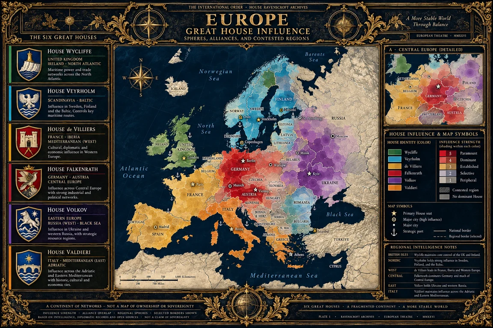

Approved illustrated atlas · October 2026
A continent of overlapping influence.
Great-House influence operates through institutions, subordinate Houses, finance, government, patronage and intelligence. These colored spheres represent comparative reach, not state sovereignty or precise charter boundaries.


Reading the Atlas
House colors distinguish which Great House has the strongest regional influence; changes in intensity suggest relative institutional depth. Overlap reflects simultaneous House networks. A neutral region does not mean the Order or other Houses have no presence.
Edition note: This is the approved illustrated narrative edition, intended to be geographically credible but not a surveyed map. Specific numeric scores and all precise influence boundaries remain interpretive rather than independently locked canon. Atlas production standard.